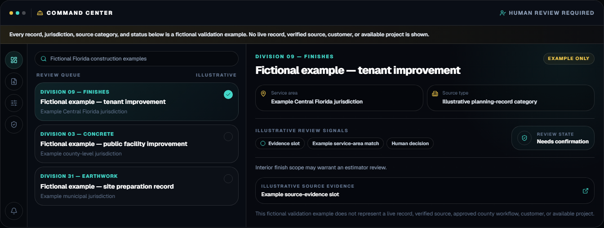

Featured projectIn development
Growth AI Agent
Construction opportunity intelligence
An AI-assisted system for researching and reviewing construction opportunities, with source-linked evidence and human approval.
- My contribution
- Product requirements, construction workflow design, source strategy, AI-assisted implementation, and validation.
- React
- TypeScript
- FastAPI
- PostgreSQL
